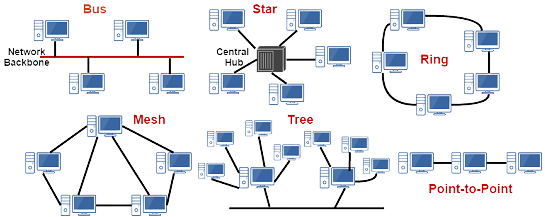
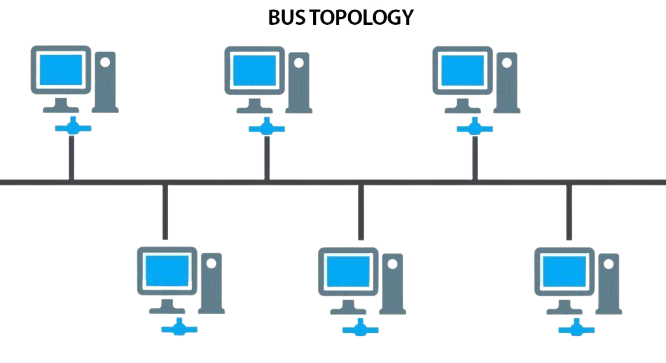
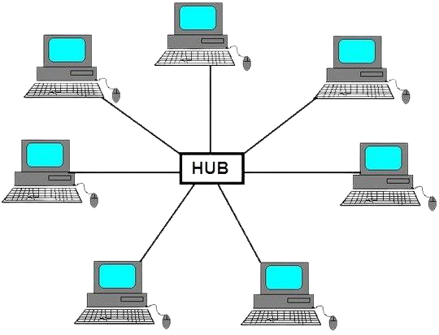
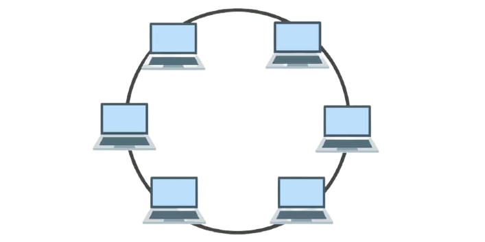
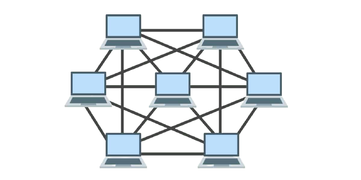
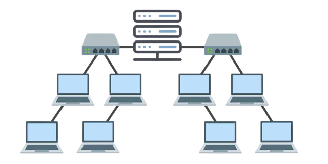

Topologi Jaringan Komputer

Topologi jaringan adalah suatu cara / konsep yang digunakan untuk menghubungkan dua komputer atau lebih, berdasarkan hubungan geometris antara unsur-unsur dasar penyusun jaringan, yaitu node, link, danstation. Pemilihan topologi jaringan didasarkan pada skala jaringan, biaya, tujuan, dan pengguna. Topologi pertama kali yang digunakan adalah topologi bus. setiap topoologi memiliki kekurangan dan kelebihannya masing-masing
Topologi ini adalah topologi yang pertama kali digunakan untuk menghubungkan komputer. dalam topologi ini masing-masing komputer aka terhububng ke satu kabel panjang dengan beberapa terminal, dan pada akhir dari kable harus di akhiri dengan satu terminator. Topologi ini sudah sangat jarang digunakan didalam membangun jaringan komputer biasa karena memiliki beberapa kekurangan diantaranya kemungkinan terjadi nya tabrakan aliran data, jika salah satu perangkat putus atau terjadi kerusakan pada satu bagian komputer maka jaringan langsung tidak akan berfungsi sebelum kerusakan tersebut di atasi.
Topologi Bus

Topologi ini adalah topologi yang pertama kali digunakan untuk menghubungkan komputer. dalam topologi ini masing-masing komputer aka terhububng ke satu kabel panjang dengan beberapa terminal, dan pada akhir dari kable harus di akhiri dengan satu terminator. Topologi ini sudah sangat jarang digunakan didalam membangun jaringan komputer biasa karena memiliki beberapa kekurangan diantaranya kemungkinan terjadi nya tabrakan aliran data, jika salah satu perangkat putus atau terjadi kerusakan pada satu bagian komputer maka jaringan langsung tidak akan berfungsi sebelum kerusakan tersebut di atasi.
Karakteristik Topologi Bus
- Node – node dihubungkan secara serial sepanjang kabel, dan pada kedua ujung kabel ditutup dengan terminator.
- Sangat sederhana dalam instalasi.
- Sangat ekonomis dalam biaya.
- Paket-paket data saling bersimpangan pada suatu kabel.
- Tidak diperlukan hub, yang banyak diperlukanadalah Tconnector pada setiap ethernet card.
- Problem yang sering terjadi adalah jika salah satu node rusak, maka jaringan keseluruhan dapat down, sehingga seluruh node tidak bisa berkomunikasi dalam jaringan tersebut.
Kelebihan Topologi Bus
- Tidak memerlukan sumber daya kabel yang banyak.
- Sangat sederhana dalam instalasi.
- Biayanya juga lebih murah dibanding dengan topologi lainnya
- tidak terlalu rumit jika kita ingin menambah jangkauan jaringan
Kekurangan Topologi Bus
- Tidak cocok untuk Trafic(lalu lintas) jaringan yang padat.
- Setiap barrel connector yang digunakan sebagai penghubung memperlemah sinyal elektrik yang dikirimkan, dan kebanyakan akan menghalangi sinyal untuk dapat diterima dengan benar.
- Sangat sulit untuk melakukan troubleshoot pada bus.
- Lebih lambat dibandingkan dengan topologi yang lain.
Topologi Star

Seperti namanya susunan pada topologi STAR sama seperti lambang bintang yang biasa kita buat. topologi ini memiliki node inti/tengah yang disambungkan ke node lainnya.
Karakteristik Topologi Start
- Setiap node berkomunikasi langsung dengan konsentrator (HUB).
- Bila setiap paket data yang masuk ke consentrator (HUB) kemudian di broadcast keseluruh node yang terhubung sangat banyak (misalnya memakai hub 32 port), maka kinerja jaringan akan semakin turun.
- Sangat mudah dikembangkan.
- Jika salah satu ethernet card rusak, atau salah satu kabel pada terminal putus, maka keseluruhhan jaringan masih tetap bisa berkomunikasi atau tidak terjadi down pada jaringan keseluruhan tersebut.
- Tipe kabel yang digunakan biasanya jenis UTP.
Kelebihan Topologi Star
- Cukup mudah untuk mengubah dan menambah komputer ke dalam jaringan yang menggunakan topologi star tanpa mengganggu aktvitas jaringan yang sedang berlangsung.
- Apabila satu komputer yang mengalami kerusakan dalam jaringan maka komputer tersebut tidak akan membuat mati seluruh jaringan star.
- Kita dapat menggunakan beberapa tipe kabel di dalam jaringan yang sama dengan hub yang dapat mengakomodasi tipe kabel yang berbeda.
Kekurangan Topologi Star
- Memiliki satu titik kesalahan, terletak pada hub.Jika hub pusat mengalami kegagalan, maka seluruh jaringan akan gagal untuk beroperasi.
- Membutuhkan lebih banyak kabel karena semua kabel jaringan harus ditarik ke satu central point, jadi lebih banyak membutuhkan lebih banyak kabel daripada topologi jaringan yang lain.
- Jumlah terminal terbatas, tergantung dari port yang ada pada hub.
- Lalulintas data yang padat dapat menyebabkan jaringan bekerja lebih lambat .
Topologi Ring

Topologi ring digunakan dalam jaringan yang memiliki performance tinggi, jaringan yang membutuhkan bandwidth untuk fitur yang time-sensitive seperti video dan audio, atau ketika performance dibutuhkan saat komputer yang terhubung ke jaringan dalam jumlah yang banyak.
Pada Topologi cincin, masing-masing titik/node berfungsi sebagai repeater yang akan memperkuat sinyal disepanjang sirkulasinya, artinya masing-masing perangkat saling bekerjasama untuk menerima sinyal dari perangkat sebelumnya kemudian meneruskannya pada perangkat sesudahnya, proses menerima dan meneruskan sinyal data ini dibantu oleh TOKEN.
Karakteristik Topologi Ring
- Node-node dihubungkan secara serial di sepanjang kabel, dengan bentuk jaringan seperti lingkaran.
- Sangat sederhana dalam layout seperti jenis topologi bus.
- Paket-paket data dapat mengalir dalam satu arah (kekiri atau kekanan) sehingga collision dapat dihindarkan.
- Problem yang dihadapi sama dengan topologi bus, yaitu: jika salah satu node rusak maka seluruh node tidak bisa berkomunikasi dalam jaringan tersebut.
- ipe kabel yang digunakan biasanya kabel UTP atau Patch Cable (IBM tipe 6).
Kelebihan Topologi Ring
- Data mengalir dalam satu arah sehingga terjadinya collision dapat dihindarkan.
- Aliran data mengalir lebih cepat karena dapat melayani data dari kiri atau kanan dari server.
- KDapat melayani aliran lalulintas data yang padat, karena data dapat bergerak kekiri atau kekanan.
- Waktu untuk mengakses data lebih optimal.
Kekurangan Topologi Ring
- Apabila ada satu komputer dalam ring yang gagal berfungsi, maka akan mempengaruhi keseluruhan jaringan.
- Menambah atau mengurangi komputer akan mengacaukan jaringan.
- Jumlah terminal terbatas, tergantung dari port yang ada pada hub.
- Sulit untuk melakukan konfigurasi ulang.
Topologi Mesh

Topologi mesh adalah topologi gabungan dari topologi Ring dan Star yang sudah saya jelaskan diatas. Topologi mesh adalah suatu bentuk hubungan antar perangkat dimana setiap perangkat terhubung secara langsung ke perangkat lainnya yang ada di dalam jaringan. Akibatnya, dalam topologi mesh setiap perangkat dapat berkomunikasi langsung dengan perangkat yang dituju (dedicated links).
Karakteristik Topologi Mesh
- Topologi mesh memiliki hubungan yang berlebihan antara peralatan-peralatan yang ada.
- Susunannya pada setiap peralatan yang ada didalam jaringan saling terhubung satu sama lain.
- Jika jumlah peralatan yang terhubung sangat banyak, tentunya ini akan sangat sulit sekali untuk dikendalikan dibandingkan hanya sedikit peralatan saja yang terhubung.
Kelebihan Topologi Mesh
- Keuntungan utama dari penggunaan topologi mesh adalah fault tolerance.
- Terjaminnya kapasitas channel komunikasi, karena memiliki hubungan yang berlebih.
- Relatif lebih mudah untuk dilakukan troubleshoot.
Kekurangan Topologi Mesh
- Sulitnya pada saat melakukan instalasi dan melakukan konfigurasi ulang saat jumlah komputer dan peralatan-peralatan yang terhubung semakin meningkat jumlahnya.
- Biaya yang besar untuk memelihara hubungan yang berlebih.
Topologi Tree

Topologi jaringan komputer Tree merupakan gabungan dari beberapa topologi star yang dihubungan dengan topologi bus, jadi setiap topologi star akan terhubung ke topologi star lainnya menggunakan topologi bus, biasanya dalam topologi ini terdapat beberapa tingkatan jaringan, dan jaringan yang berada pada tingkat yang lebih tinggi dapat mengontrol jaringan yang berada pada tingkat yang lebih rendah.
Kelebihan topologi tree adalah mudah menemukan suatu kesalahan dan juga mudah melakukan perubahan jaringan jika diperlukan.
Kekurangan nya yaitu menggunakan banyak kabel, sering terjadi tabrakan dan lambat, jika terjadi kesalahan pada jaringan tingkat tinggi, maka jaringan tingkat rendah akan terganggu juga